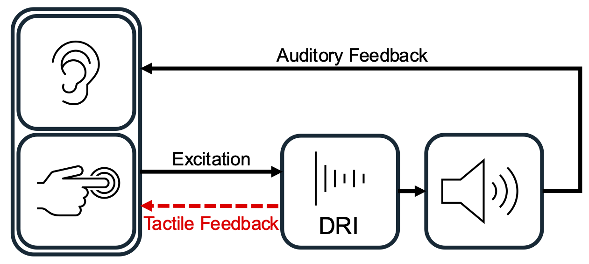
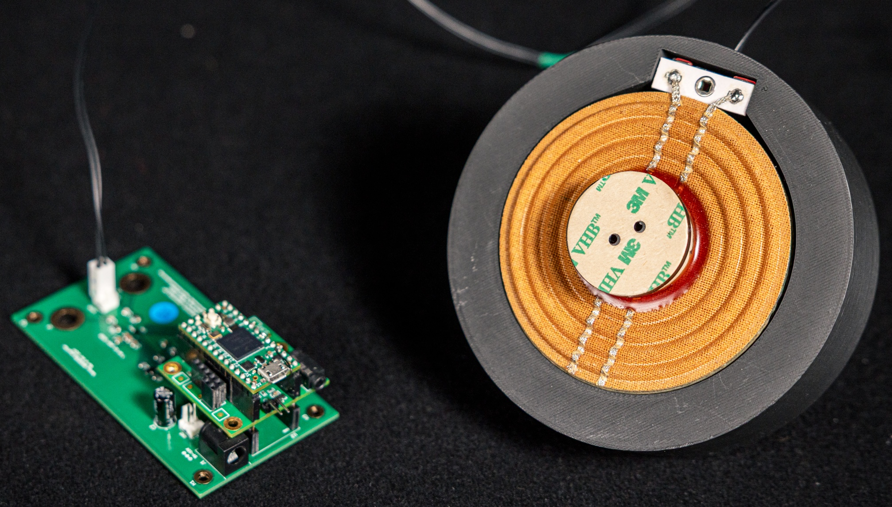

Abstract
Direct interaction with digital synthesisers using audio signals can offer opportunities for intimate and nuanced interaction in digital musical instrument designs. Unlike acoustic instruments, these hybrid instruments tend to follow a unidirectional interaction structure: tactile gestures generate audio signals that are fed into a synthesiser, but there is no vibrotactile feedback from the instrument back to the musician. This paper presents the HaptiCoupler system that enables bidirectional tactile interaction with digital musical instruments using a single voice coil transducer. A study is undertaken with experienced digital musical instrument designers to explore the design implications of introducing closely coupled, collocated haptic feedback in musical systems. The potential creative implications for designers are discussed.
Attending CHI in Barcelona? Catch the talk on Wednesday 15/04 in the Co-Design in Motion & High-Stakes Contexts session (11:15 AM - 12:45 PM, P1 - Room 111).
Not able to make it? Watch a recording of the presentation below and get in touch with any questions!
Video Presentation
Background

Digital resonator instruments (where an audio input is used to excite a resonant synthesiser) offer the oppurtunity for nuanced gestural control. These gestures, however, tend to still be unidirectional; no tactile energy is returned to the musician. The addition of haptic feedback (through the HaptiCoupler system used in this paper) offers to oppurtunity of bidirectional tactile interaction. This paper explores what the design implications may be for digital musical instrument designs when this bidirectional link is introduced.
How the System Works

The HaptiCoupler system used in this study uses single voice coil transducer to both sense and actuate vibrations. By actuating a voltage and sensing a current, it can achieve both functionalities simultaneously. Due to Ohm's law, the actuated voltage will also induce a current, causing crosstalk between actuation and sensing. This is mitigated by using a digital filter model of the voice coil's electrical admittance to cancel the crosstalk from the actuation signal, leaving only the current induceed by external forces.
Additionally, when the voice coil is pressed, this increases the mechanical damping of the voice coil, leading to a reduction in the peak of the electrical impedance at the resonant frequency. This is sensed (and provided as an additional control parameter) by measuring the change in level of a low level tone actuated at the resonant frequency.
The system uses a Teensy 4.0 microcontroller to perform the cancellation and tone sensing DSP, acting as a USB audio/midi interface. A MAX98389 current sensing amplifier is used to sense current and actuate voltage at 44.1kHz. Further details can be found in the full paper.
BibTeX
@inproceedings{davisonDesignExplorationsInstruments2026,
title = {Design {{Explorations}} of {{Instruments}} and {{Interactions}} with {{Bidirectional Haptic Couplings}}},
booktitle = {Proceedings of the 2026 {{CHI Conference}} on {{Human Factors}} in {{Computing Systems}}},
author = {Davison, Matthew and McPherson, Andrew},
year = 2026,
month = apr,
publisher = {Association for Computing Machinery},
address = {Barcelona, Spain},
doi = {10.1145/3772318.3791190}
}